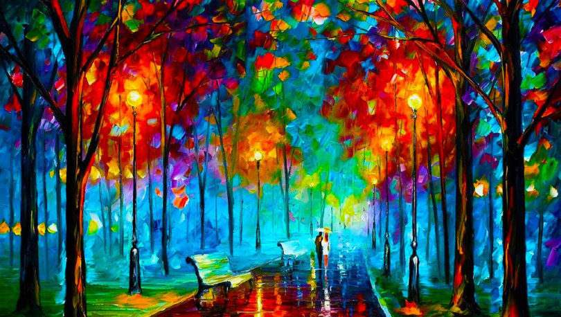

Artes:
 Durante muitos anos, o ensino de Arte se resumiu a tarefas pouco criativas e marcadamente repetitivas. Desvalorizadas na grade curricular, as aulas dificilmente tinham continuidade ao longo do ano letivo. "As atividades iam desde ligar pontos até copiar formas geométricas. A criança não era considerada uma produtora e por isso, cabia ao professor dirigir seu trabalho e demonstrar o que deveria ser feito", afirma Rosa Tavelberg, diretora do Centro Universitário Maria Antonia, em São Paulo, e co- autora dos Parâmetros Curriculares Nacionais (PCNs) sobre a disciplina Nas últimas duas décadas, essa situação vem mudando nas escolas brasileiras. Hoje, a tendência que guia a área é a chamada sociointeracionista, que prega a mistura de produção, reflexão e apreciação de obras artisticas. Como defendem os próprios PCNS, è papel da escola "ensinar a produção histórica e social da arte e ao mesmo tempo, garantir ao aluno a liberdade de imaginar e edificar propostas artísticas pessoais ou grupais com base em intenções próprias."
Conteúdo da disciplina Durante o ano
1º ano Informática:
Arte: Conceitos e suas funções;
O Belo, o feio, o estranho,o singular,o polissêmico e a afetividade na Arte;
Campo de atuação nas Artes visuais
Técnicas e materiais expressivos nas Artes visuais:desenho, gravura, pintura,guache,colagem, escultura,arquitetura,fotografia, cinema e outras tipologias de materialidade artistica;
2º ano Informática:
Origem das Artes visuais:Pré -historia
Artes visuais na antiguidade mesopotâmia,Egito,Grécia e Romar;Arte Africana
3º ano Informática:
Elemento Básicos da Linguagem visual I:Ponto ,Linha,Forma,Textura e Cor;
Elemento da Linguagem visual II: Dimensão,plano,Perspectiva,Escala,Direção,Ritmo,Movimento;
Fundamento da Composição visual:Equilibrio ,Tensão,Nivelamento e Aguçamento,Atração e Agrupamento positivo e negativo
4º ano Informática:
Arte Cristã primitiva(Paleocristã);
Artes Bizantina;
Artes Hindu;
Artes Islâmica;
Artes Românica;
Artes Gótica